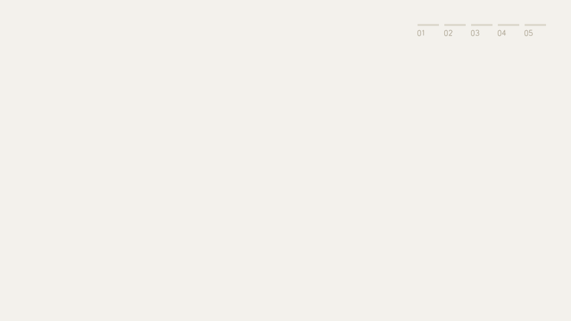

Data flow · dorocap
How an engagement becomes a report
Screenshots and imported files become hashed evidence. Export writes a checksum only after verify passes, and finalize copies that exact draft.

Paper #f3f1ec · Ink #2a312e · Accent #d86a2a · Report #2f6b45